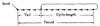

| Previous | Table of Contents | Next |
documentation n. [Latin documentum “warning”] 1 The promised literature that fails to arrive with the supporting hardware. 2 A single, illegible, photocopied page of proprietary caveats and suggested infractions. 3 The detailed, unindexed description of a superseded package.
—S. Kelly-Bootle
The Devil’s DP Dictionary
One of the key steps in developing a simulation is to have a routine to generate random values for variables with a specified random distribution, for example, exponential and normal. This is done in two steps. First, a sequence of random numbers distributed uniformly between 0 and 1 is obtained. Then the sequence is transformed to produce random values satisfying the desired distribution. The first step is called random-number generation and the second random-variate generation. We discuss the former in this chapter.
In order to understand why one random-number generator would be considered better than another, consider first how such generators operate. The most common method is to use a recursive relation in which the next number in the sequence is a function of the last one or two numbers, that is,
| xn = f(xn-1, xn-2,...) | (26.1) |
One such function is
| xn = 5xn-1 + 1 mod 16 | (26.2) |
Starting with x0 = 5, we obtain x1 as follows:
| x1 = 5(5) + 1 mod 16 = 26 mod 16 = 10 | (26.3) |
The first 32 numbers obtained by this procedure are 10, 3, 0, 1, 6, 15, 12, 13, 2, 11, 8, 9, 14, 7, 4, 5 10, 3, 0, 1, 6, 15, 12, 13, 2, 11, 8, 9, 14, 7, 4, 5.
The x’s are integers between 0 and 15. By dividing x’s by 16, we get a sequence of random numbers between 0 and 1. For this example, the numbers are 0.6250, 0.1875, 0.0000, 0.0625, 0.3750, 0.9375, 0.7500, 0.8125, 0.1250, 0.6875, 0.5000, 0.5625, 0.8750, 0.4375, 0.2500, 0.3125, 0.6250, 0.1875, 0.0000, 0.0625, 0.3750, 0.9375, 0.7500, 0.8125, 0.1250, 0.6875, 0.5000, 0.5625, 0.8750, 0.4375, 0.2500, 0.3125.
It is obvious that if the function f is known, we can regenerate the sequence any time provided the starting value x0 is given. This value, which is used to begin the sequence, is called the seed.
An important observation about this example is that the function f is deterministic. Given the seed, we can tell with a probability of 1 what the numbers in the sequence would be. Yet the numbers are random in the sense that they would pass statistical tests for randomness. These numbers are therefore only partially random and are called pseudo-random. Such numbers are preferable to fully random numbers in simulation applications because it is often desirable to be able to repeat a simulation experiment exactly the way it was done before. Of course, if a different result is needed, we can change the seed before running the simulation. Thus, we have additional control over reproducibility of results.
Notice that in the preceding example, only the first 16 numbers are unique. The 17th number is the same as the first and the remaining sequence is simply a cyclic repetition of the first 16 numbers. In other words, this random-number generator has a cycle length of 16. Some generators do not repeat an initial part of the sequence. This part is called the tail. In such cases, the period of the generator is the sum of the tail length L and the cycle length C, as shown in Figure 26.1.
A performance analyst developing a simulation model has to select an appropriate value for seed and an appropriate generator function. The seed selection is discussed later in Section 26.7. Here, we concentrate on selecting the right generator function.

FIGURE 26.1 Cycle length, tail length, and period of a random-number generator.
The desired properties of the generator function are as follows:
While the first two properties are easy to establish, the third requires a battery of tests, which are discussed later in Chapter 27. Following are some of the types of random-number generators discussed in this chapter:
A description of each of these approaches follows.
In 1951, D. H. Lehmer discovered that the residues of successive powers of a number have good randomness properties. He obtained the nth number in the sequence by dividing the nth power of an integer a by another integer m and taking the remainder. That is,
xn = an mod m
An equivalent expression used to compute xn after computing n-1 is
xn = axn-1 mod m
The parameters a and m are called multiplier and modulus, respectively. Lehmer’s choices for these parameters were a = 23 and m = 108 + 1. These choices made it very easy to implement on ENIAC, which was an eight-digit decimal machine.
Many of the currently used random-number generators are a generalization of the Lehmer’s proposal and have the following form:
| xn = axn-1 + b mod m | (26.4) |
Here, the xn’s are integers between 0 and m - 1. Constants a and b are nonnegative.
These generators are popular because they can be analyzed easily, and certain guarantees can be made about their properties using the theory of congruences. For this reason, they are also called Mixed Linear-Congruential Generators or Linear-Congruential Generators (LCGs) for short. The word mixed implies using both multiplication by a and addition of b.
In general, the choice of a, b, and m affects the period and autocorrelation in the sequence. A number of researchers have studied such generators, and the results of their studies can be summarized as follows:
| Previous | Table of Contents | Next |
){kind=link}
){kind=link}